tile_with_blotches = "APF0000004"Plotting
Plotting tools for Planet Four data.
plot_blotches_for_tile
def plot_blotches_for_tile(
tile_id, ax:NoneType=None, **plot_kwargs
):Call self as a function.
plot_blotches_for_tile(tile_with_blotches, color="green", with_center=True)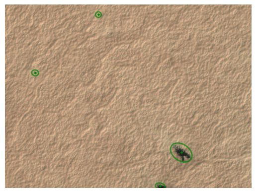
Raw marking plots
These functions plot the raw citizen science markings (before clustering) for a given tile. They require access to the Planet Four classifications database via DBManager (configured in ~/.p4tools.ini).
plot_raw_blotches
def plot_raw_blotches(
tile_id, # Planet Four tile ID (full or short form).
ax:NoneType=None, # Axes to plot on. If None, a new figure is created.
dbname:NoneType=None, # Path to database file. If None, uses ``[planet4_db] dbname`` from config.
**kwargs
):Plot all raw blotch markings from the classifications database for a tile.
plot_raw_fans
def plot_raw_fans(
tile_id, # Planet Four tile ID (full or short form).
ax:NoneType=None, # Axes to plot on. If None, a new figure is created.
dbname:NoneType=None, # Path to database file. If None, uses ``[planet4_db] dbname`` from config.
**kwargs
):Plot all raw fan markings from the classifications database for a tile.
plot_fans_for_tile
def plot_fans_for_tile(
tile_id, ax:NoneType=None, **plot_kwargs
):Call self as a function.
tile_with_fans = "APF000000c"plot_original_tile
def plot_original_tile(
tileID, ax:NoneType=None
):Call self as a function.
plot_original_tile(tile_with_blotches)plot_original_and_fans
def plot_original_and_fans(
tileID
):Call self as a function.
plot_original_and_fans(tile_with_fans)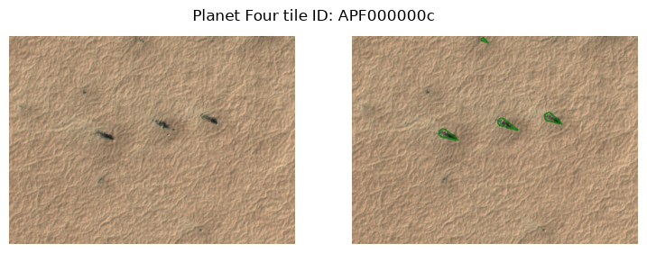
plot_original_and_blotches
def plot_original_and_blotches(
tileID
):Call self as a function.
plot_original_and_blotches(tile_with_blotches)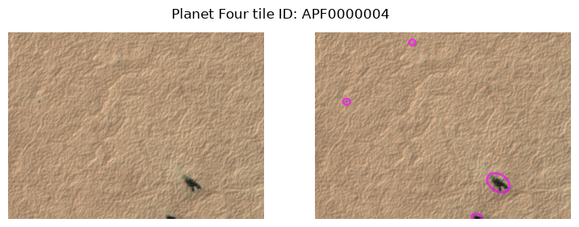
plot_original_fans_blotches
def plot_original_fans_blotches(
tileID, save:bool=False
):Call self as a function.
tile_with_both = "APF0000006"plot_original_fans_blotches(tile_with_both)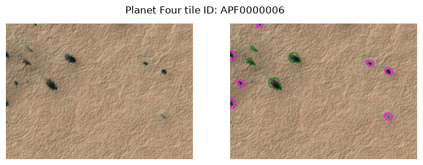
plot_random_tiles_with_min_fans
def plot_random_tiles_with_min_fans(
x:int=3, # how many tiles (original + fan overlay plots) to show
n:int=15, # minimum number of fans a tile must contain
cached_only:bool=False, # if True, only sample tiles whose image is locally cached
exclude_blotches:bool=False, # if True, only sample tiles that have no blotches
save:bool=False, # if True, saves a PNG with the plot for each tile_id separately
random_state:int=None, # can be set to recreate the exact same set
):Plot x random tiles containing at least n fans: original image next to fan overlay.
plot_random_tiles_with_min_blotches
def plot_random_tiles_with_min_blotches(
x:int=3, # how many tiles (original + blotch overlay plots) to show
n:int=15, # minimum number of blotches a tile must contain
cached_only:bool=False, # if True, only sample tiles whose image is locally cached
exclude_fans:bool=False, # if True, only sample tiles that have no fans
save:bool=False, # if True, saves a PNG with the plot for each tile_id separately
random_state:int=None, # can be set to recreate the exact same set
):Plot x random tiles containing at least n blotches: original image next to blotch overlay.
plot_random_tiles_with_min_fans(2, cached_only=True, random_state=42)
plot_random_tiles_with_min_blotches(2, cached_only=True, random_state=42)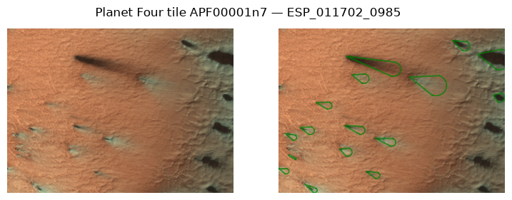
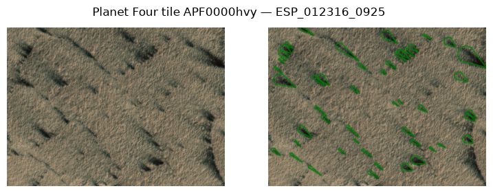
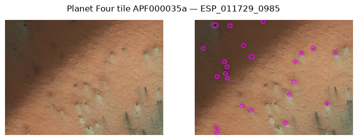
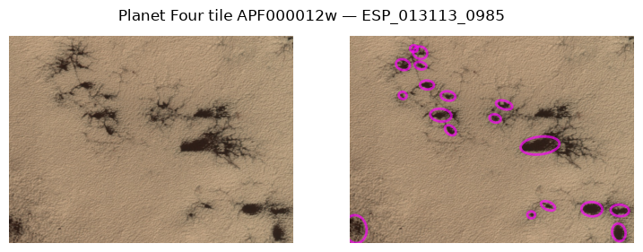
plot_random_tiles_with_min_blotches(x=10, n=10, cached_only=True, exclude_fans=True)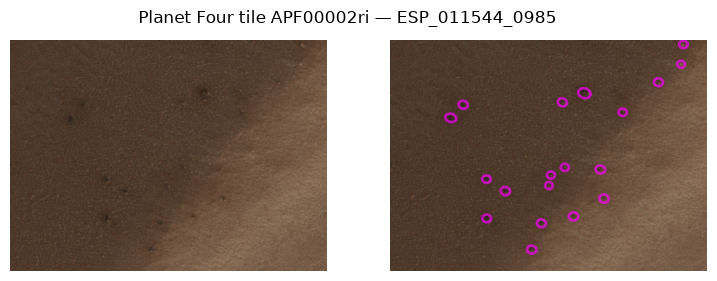
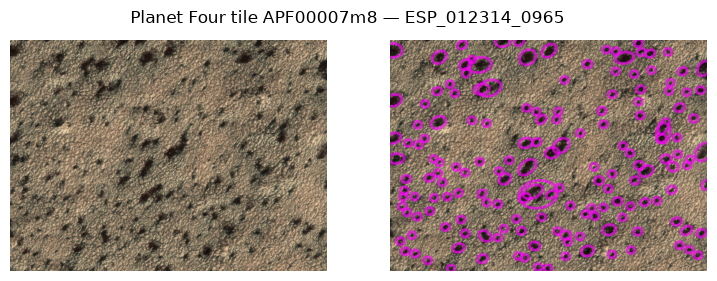
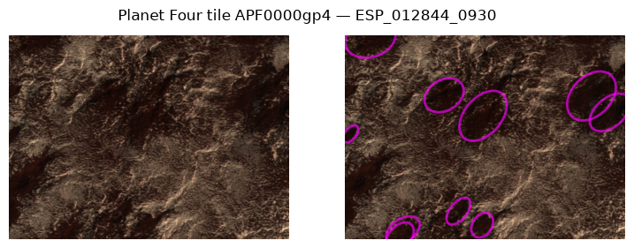
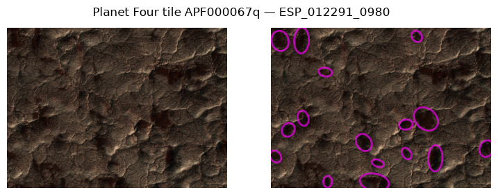
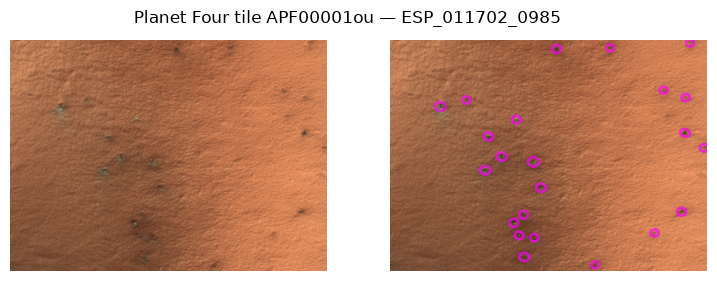
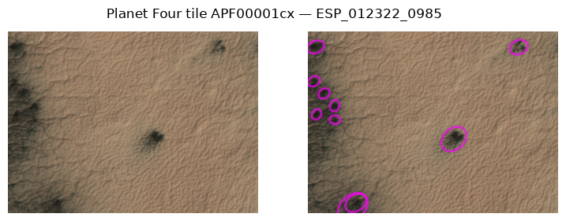
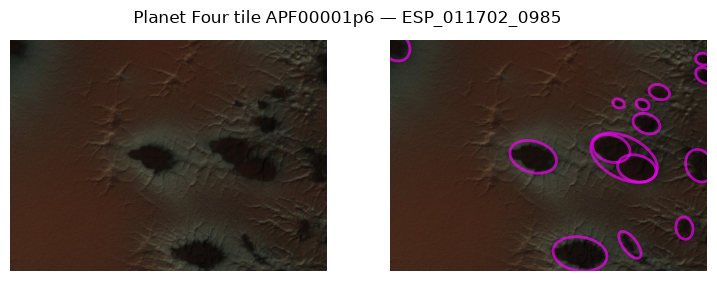
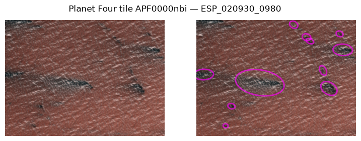
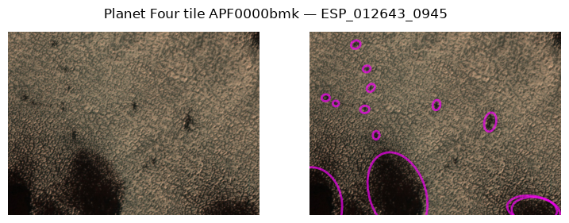
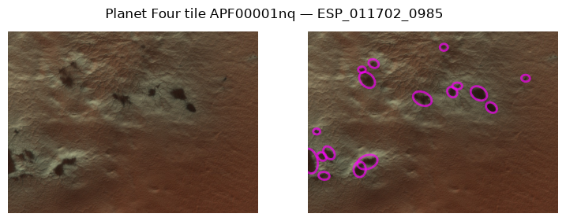
blotch_ids = ["ESP_012248_0965"]plot_x_random_tiles_with_n_fans
def plot_x_random_tiles_with_n_fans(
x:int=3, # how many of 2 col original+p4 data plots to receive
n:int=15, # whats the minimum number of fans to contain
save:bool=False, # if True, saves a PNG with the plot for each tile_id separately
random_state:int=None, # can be set to recreate the exact same set
):Deprecated: use plot_random_tiles_with_min_fans (or ..._min_blotches) instead.
Note this old version only considered fan tiles that also contain blotches and overlays both marking kinds; the replacements treat fans and blotches separately.
plot_x_random_tiles_with_n_fans(2)100%|████████████████████████████████████████| 170k/170k [00:00<00:00, 345MB/s]
100%|████████████████████████████████████████| 171k/171k [00:00<00:00, 240MB/s]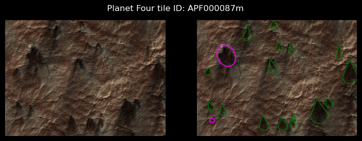
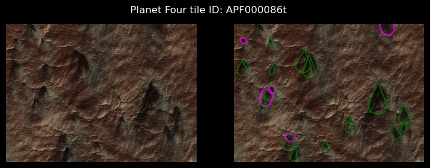
histogram_cartesian
def histogram_cartesian(
df, # The data to be plotted.
ls_bin:int=4, # The number of bins or an array-like object defining the bin edges. (default is 4).
segmentsize:float=3.6, # The size of the segments in the histogram (default is 3.6).
alpha:float=0.5, # The transparency level of the histogram bars (default is 0.5).
degrees:bool=True, # Whether to use degrees for the histogram (default is True).
): # The axes object with the plotted histogram.Plots a histogram of the wind directions on Cartesian coordinates.
histogram_polar
def histogram_polar(
df, # The input data frame containing the data to be plotted.
ls_bin:int=4, # The number of bins or an array-like object defining the bin edges. Default is 4.
per_obsid:bool=False, # If True, the histogram is plotted per observation ID. Default is False.
segmentsize:float=3.6, # The size of each segment in degrees. Default is 3.6.
alpha:float=0.5, # The transparency level of the histogram bars. Default is 0.5.
cutoff:NoneType=None, # A cutoff value to filter the data. Default is None.
): # The polar axes with the plotted histogram.Plots a histogram in polar coordinates. These are the inverse windrose plots.
get_colorscale
def get_colorscale(
nr:int, # The number of colors to generate in the color scale.
): # An array of colors corresponding to the specified number of colors.Generate a color scale with a specified number of colors.
initialize_polar_axes
def initialize_polar_axes(
ax:PolarAxes, # An Matplotlib polar Axis
):Initializes the Polar Axes to Wind Directions, counted in clockwise direction from N
compute_direction_histogram
def compute_direction_histogram(
df, # DataFrame containing 'angle' and 'north_azimuth' columns.
segmentsize, # Size of the segments (bins) for the histogram in degrees.
density:bool=True, # If True, the result is the value of the probability density function at the bin,
# normalized such that the integral over the range is 1. Default is True.
degrees:bool=False, # If True, the bin edges are returned in degrees. If False, they are returned in radians. Default is False.
): # The bin edges in radians or degrees, depending on the `degrees` parameter.Compute a histogram of direction angles adjusted by north azimuth.
We can create an Inverse Windrose for a given region by filtering the dataframe for a number of obsids within the region. Here the example shows the lists of the obsids within the Potsdam region.
obsid_potsdam = [
'ESP_011526_0980',
'ESP_012805_0980',
'ESP_021508_0980',
'ESP_021521_0980',
'ESP_012515_0980',
'ESP_012594_0980',
'ESP_020374_0980',
'ESP_020875_0980',
'ESP_011460_0980',
'ESP_021574_0980',
'ESP_020941_0980',
'ESP_011737_0980',
'ESP_012871_0980',
'ESP_021587_0980',
'ESP_022510_0980',
'ESP_020163_0980',
'PSP_004775_0980']
## Point the read_csv to your file location.
fpath = "../../../../Data/P4_catalog_Full_Release_v3.0/P4_catalog_Full_Release_v3.0_L1C_cut_0.5_fan_meta_merged.csv"
Data = pd.read_csv(fpath)
Data = Data[Data.obsid.isin(obsid_potsdam)]
histogram_polar(Data,ls_bin=5,cutoff=60)Data.marking_id != Falsehistogram_cartesian(Data)show_stamps
def show_stamps(
df_stamps:GeoDataFrame, # A GeoDataFrame containing the geospatial HiRISE stamps to be plotted.
mark_stamp:Union=None, # The ID(s) of the stamp(s) to be highlighted in red. If None, no stamps are highlighted.
ax:NoneType=None, # The axes on which to plot. If None, a new figure and axes are created.
): # The axes with the plotted stamps.Plot the geospatial stamps of the HiRISE images on a map.
Stamps = gpd.read_file("../../../../Data/Obsid_stamps.gpkg")
ithaca_full = Stamps[Stamps.Region == "Ithaca"]
show_stamps(ithaca_full)show_stamps(ithaca_full,mark_stamp="ESP_012854_0945")show_stamps(ithaca_full,mark_stamp=["ESP_012854_0945","ESP_012858_0855"])Slide-deck and distribution plotting helpers
Generic helpers (talk-context rcParams, histogram+KDE, per-group KDE overlay, small-multiples grid) used by p4tools.egu26 and any other talk/paper module.
smallmult_highlight_grid
def smallmult_highlight_grid(
df, panel_col:str, x_col:str, y_col:str, yerr:NoneType=None, ncols:int=3, x_lim:NoneType=None,
palette:str='viridis', figsize:NoneType=None, title_fmt:str='{panel_col} {value} (N={n})'
):Small-multiples grid; one panel per panel_col value highlights its own subset on a faint grey background of all other panels’ points.
yerr may be a tuple of column names (low, high) for asymmetric IQR-style error bars, or None. Returns the matplotlib Figure.
kde_per_group
def kde_per_group(
df, group_col:str, value_col:str, ax:NoneType=None, palette:str='viridis', upper_quantile:float=0.995,
show_background:bool=True, label_fn:NoneType=None
):One KDE per group_col value of df[value_col], optional shared faint hist background.
histogram_kde
def histogram_kde(
values, ax:NoneType=None, bins:int=60, upper_quantile:float=0.995, color:str='#1f77b4', kde:bool=True,
show_median:bool=True, show_mean:bool=True, label:str | None=None
):Histogram + optional KDE overlay + optional median/mean reference lines.
Returns the axes used. Caller is responsible for figure creation, titles, axis labels, and saving. Uses seaborn for the histogram so the KDE is rendered consistently with the binned data.
apply_talk_context
def apply_talk_context(
min_pt:int=24
)->None:Apply seaborn’s “talk” context, scaled so the smallest text element is at least min_pt (default 24 — the EGU26 slide-deck guideline).
Thin wrapper over :func:seaborn.set_context — we delegate all element proportions (titles vs axis labels vs ticks vs legend) to seaborn and only choose the overall scaling factor.
overlay_obsid
def overlay_obsid(
obsid, image_path, ax:NoneType=None, version:NoneType=None, fan_kw:NoneType=None, blotch_kw:NoneType=None
):Show a map-projected raster and overlay that obsid’s fans + blotches in its CRS.
image_path is any rasterio-readable map-projected image (ISIS cube / GeoTIFF); markings are reprojected into its CRS so the overlay is pixel-aligned.
add_blotches
def add_blotches(
ax, blotches, src_crs:NoneType=None, target_crs:NoneType=None, n_ell:int=48, facecolor:str='none',
edgecolor:str='deepskyblue', linewidth:float=0.6, **kw
):Overlay blotches on a cartopy axis (src_crs) or a projected raster (target_crs).
add_fans
def add_fans(
ax, fans, src_crs:NoneType=None, target_crs:NoneType=None, n_arc:int=16, facecolor:str='none',
edgecolor:str='red', linewidth:float=0.6, **kw
):Overlay fans on a cartopy axis (src_crs) or a projected raster (target_crs).